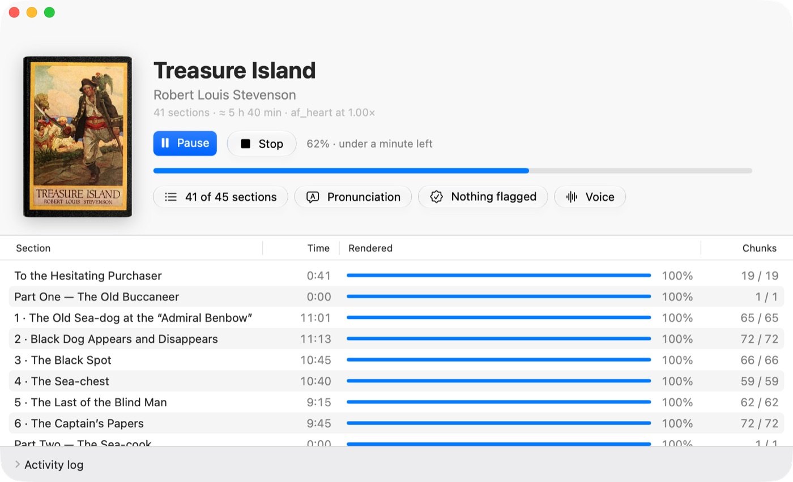
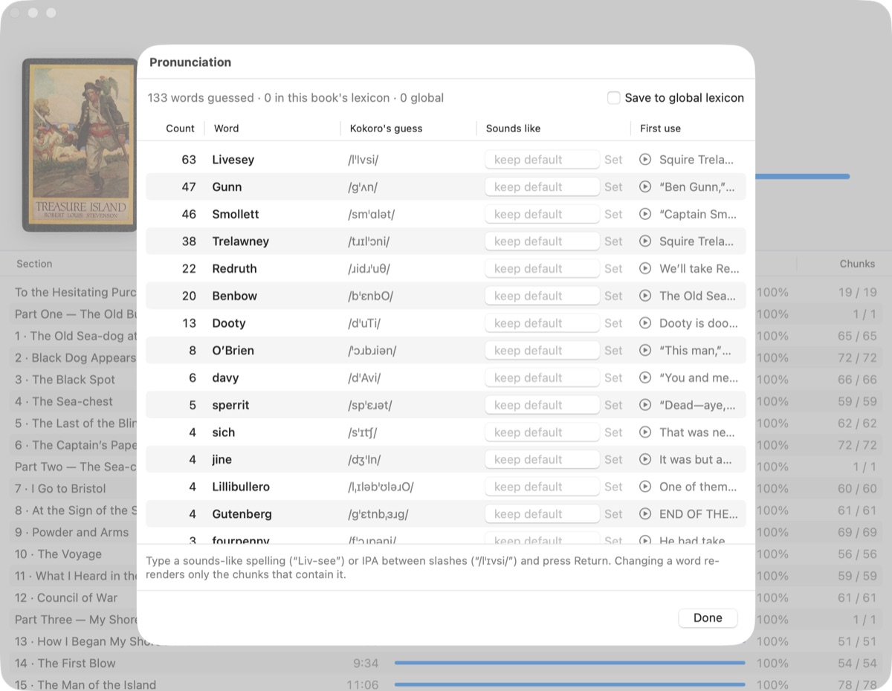

Turn a DRM-free EPUB into a chaptered M4B audiobook, entirely offline on your Mac. It checks its own work before you press play.
Free and open source (Apache-2.0). Apple silicon, macOS 15 or later.

Narrate uses Kokoro-82M, a small open speech model, running on Core ML on the Neural Engine. Nothing leaves your Mac, and there's no account, no subscription and no Python to install. A whole novel renders in a night on a base 16 GB MacBook Air.
The book's cover, its chapters and the one thing to do next: Render, Pause, Export, Show in Finder. The rest is a click away.
Chapters, parts and front matter come from the table of contents. Untick what you don't want, or pick Default, All or Chapters.
Names the speech model would guess at, ranked by how often they occur. Type “Liv-see” once and it applies to the whole book.
Cached per sentence, so a chunk is never rendered twice. Pause or stop and pick up later; the Mac stays awake while it works.
Every chunk's audio is checked for odd pacing, long silences, clipping and cut-off endings. Only the flagged ones need your ears.
One encode to AAC with chapter markers, cover art and tags that say the voice is synthetic. No ffmpeg needed.
Unusual names are what give synthetic narration away. Narrate lists every word Kokoro has no entry for, so “Livesey”, “Trelawney” and “Hispaniola” get fixed once, before the render, not after eight hours of audio. Changing a word re-renders only the sentences that contain it.

Download the notarized app from the latest release, or install it with Homebrew. The voice model (~220 MB) downloads once, the first time you render.
brew install --cask https://raw.githubusercontent.com/djui/narrate/main/packaging/narrate.rb
Prefer the terminal? The same core ships as a command-line tool:
swift build -c release .build/release/narrate build treasure-island.epub